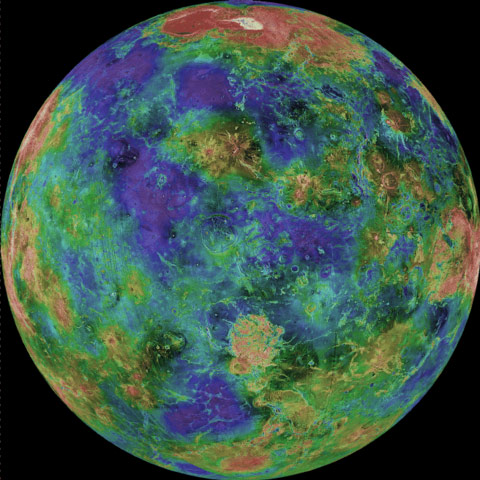

Moons

Venus's Fake Moon 1
This moon is amazing it looks like it’s habitable by humans.
- Diameter (km):
- 22.2 km
- Mass (kg):
- 2×10 ^ 15 km
- Orbital period:
- 30.35 h

Venus's Fake Moon 2
Look at all the pretty colours of this moon—mustn’t be real-colour.
- Diameter (km):
- 12.6 km
- Mass (kg):
- 10.8×10 ^ 15 km
- Orbital period:
- 7.66 h